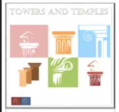

Review of Towers and Temples
- Game ID
- bg210
- List Price
- $17.73
- Media
- Board Game
- Release Date
- October 21, 2017
- Age
- 10+
- Players
- 2 – 8
- Time
- 30 – 60 minutes
Rule an Ancient City
Towers and Temples is the winner of the 2017 Palmer Medal for Best New Simulation Board Game. Players adopt role cards of characters from ancient Greece and Rome in an attempt to manage the administration of a city. Each role provides a different ability and strategy. However, one role card belongs to a deadly assassin and players must be constantly aware of betrayal and double-cross. This card game provides a ton of enjoyment and can handle up to eight players and expansion packs available for larger parties.
This is a nicely balanced game, where each player must carefully choose his or her roles and the strategies can quickly change with the turn of a card. However the level of randomness is just right and cunning and resourcefulness can overcome bad luck (if given time.) I do not recommend this game unless there are at least 4 players; less than that reduces the intrigue and some of the game appeal.
Harpe Gaming's Rating
- Entertainment (8/10)
- Strategy (9/10)
- Innovation (7/10)
- Art Work (6/10)
- Community Enjoyment (10/10)
- Ease of Set Up (9/10)
- Play Again (10/10)
- OVERALL (8.43/10)